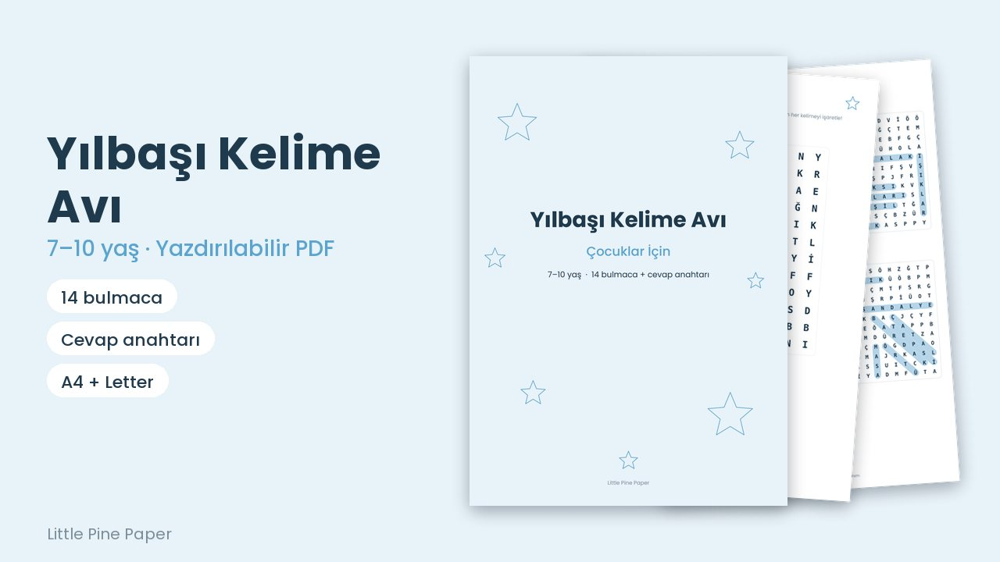
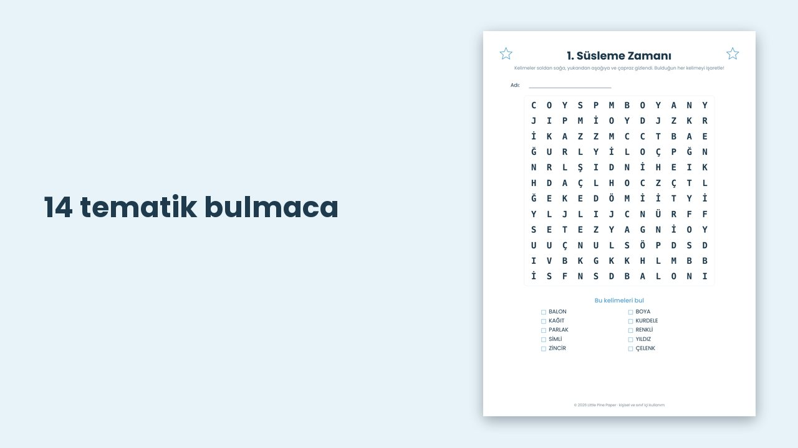
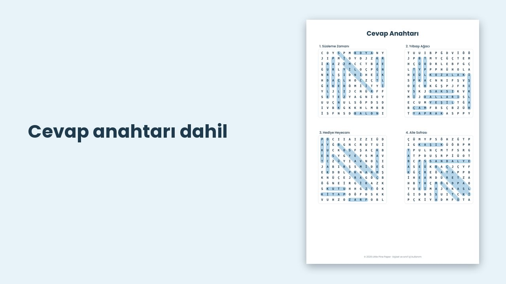

Yılbaşı temalı bu yazdırılabilir kelime avı kitapçığı, 7-10 yaş grubundaki çocuklar için keyifli bir aktivite seçeneği sunar. Evde veya okulda kullanıma uygun olan bu set, kış ve yeni yıl temalarını içeren çeşitli bulmacalardan oluşur.
Kitapçığın İçeriğinde Neler Var?
İçerikteki temalar şunlardır: Süsleme Zamanı, Yılbaşı Ağacı, Hediye Heyecanı, Aile Sofrası, Lezzetli Yemekler, Kış Eğlencesi, Işıl Işıl Sokaklar, Yeni Yıl Dilekleri, Evdeki Hazırlıklar, Gece Kutlaması, Meyve Tabağı, Tatlı Telaşlar, Süsler ve Işıklar ile Kış Kıyafetleri.
Nasıl Kullanılır?
Satın alma işleminden sonra PDF dosyalarını A4 veya US Letter boyutundaki kağıtlara yazdırarak hemen kullanmaya başlayabilirsiniz. Çocuklar listedeki kelimeleri bulmaca ızgarası üzerinde işaretleyerek ilerleyebilirler.
Bilmenizde Fayda Var
Bu ürün dijital bir indirmedir; adresinize fiziksel bir ürün gönderilmez. Dosyalar sadece kişisel kullanım ve sınıf içi etkinlikler için lisanslanmıştır.